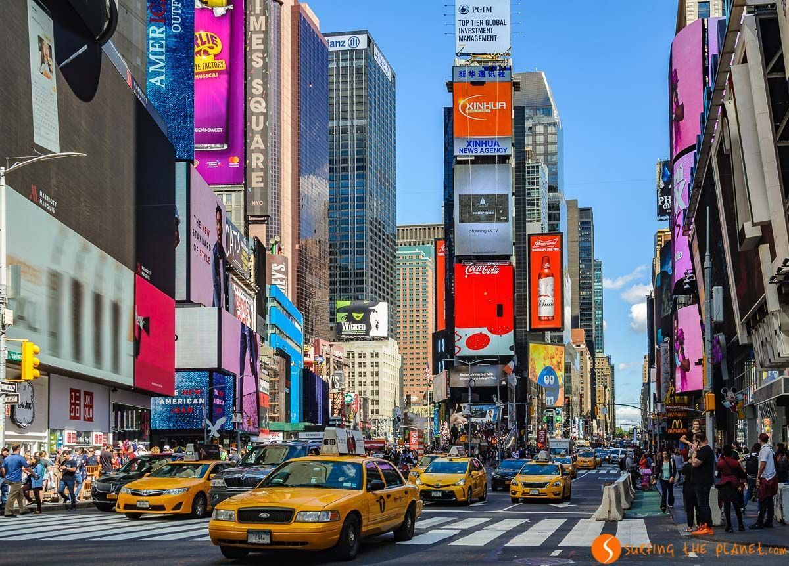

New York
Midtown Manhattan
Central Park, escenario de numerosas películas y series, es uno de los parques urbanos más grandes del mundo y uno de los símbolos indiscutibles de Nueva York.
En las 340 hectáreas que ocupa Central Park encontraréis praderas, lagos artificiales, cascadas y zonas que parecen un auténtico bosque. Dentro del propio parque también se encuentra el Zoo de Central Park y otras atracciones.